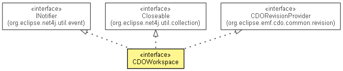

org.eclipse.emf.cdo.workspace
Interface CDOWorkspace
- All Superinterfaces:
- CDORevisionProvider, Closeable, INotifier
- All Known Subinterfaces:
- InternalCDOWorkspace
- public interface CDOWorkspace
- extends CDORevisionProvider, Closeable, INotifier

Represents a local checkout from a remote repository.
- No Implement
- This interface is not intended to be implemented by clients.
- No Extend
- This interface is not intended to be extended by clients.
getBranchPath
String getBranchPath()
getTimeStamp
long getTimeStamp()
isFixed
boolean isFixed()
getBase
CDOWorkspaceBase getBase()
openView
CDOView openView()
openView
CDOView openView(ResourceSet resourceSet)
openTransaction
CDOTransaction openTransaction()
openTransaction
CDOTransaction openTransaction(ResourceSet resourceSet)
update
CDOTransaction update(CDOMerger merger)
merge
CDOTransaction merge(CDOMerger merger,
String branchPath)
merge
CDOTransaction merge(CDOMerger merger,
String branchPath,
long timeStamp)
checkin
CDOCommitInfo checkin()
throws CommitException
- Throws:
CommitException
checkin
CDOCommitInfo checkin(String comment)
throws CommitException
- Throws:
CommitException
compare
CDOChangeSetData compare(String branchPath)
compare
CDOChangeSetData compare(String branchPath,
long timeStamp)
getLocalChanges
CDOChangeSetData getLocalChanges()
replace
void replace(String branchPath,
long timeStamp)
revert
void revert()
isDirty
boolean isDirty()
- Since:
- 4.1
Copyright (c) 2011, 2012 Eike Stepper (Berlin, Germany) and others.